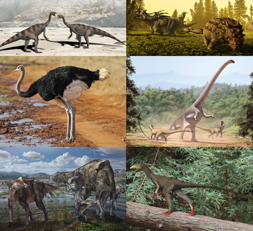
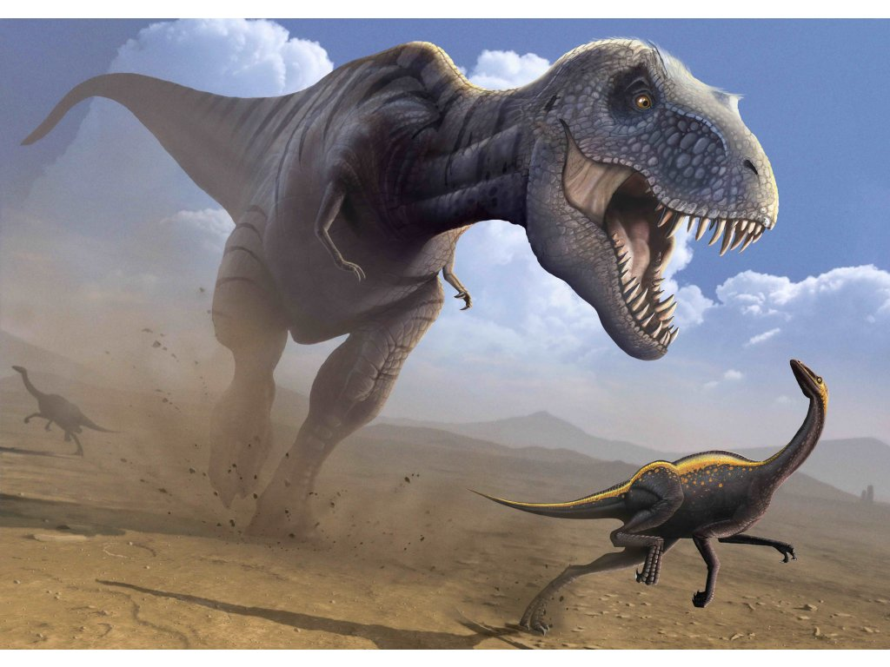

Динозавры — разнообразная группа животных с таксономической, морфологической и экологической точек зрения. Птицы, насчитывающие более 10 700 современных видов и 20 000 подвидов[2], являются самой разнообразной группой позвоночных после окунеобразных. Используя ископаемые свидетельства, палеонтологи выявили более 500 различных родов[3] и более 1000 различных видов нептичьих динозавров[4]. Динозавры представлены на каждом континенте, как современными видами (птицами), так и ископаемыми[5]. В течение первой половины XX века, до того, как птицы были признаны динозаврами, большая часть научного сообщества полагала, что динозавры были медлительными и холоднокровными существами. Однако большинство исследований, проведённых с 1970-х годов, показали, что все динозавры были активными животными с повышенным обменом веществ и многочисленными приспособлениями к социальным взаимодействиям. Одни виды динозавров были приспособлены к растительноядности, другие к плотоядности, третьи — к всеядности. Все динозавры создавали кладки яиц, а строительство гнёзд является чертой, разделяемой многими динозаврами — как нептичьими, так и птицами.
В то время как предки динозавров были бипедальными (передвигались на двух конечностях), многие вымершие группы динозавров включали в себя четвероногие виды, а некоторые из них были способны менять эти позиции. Сложные демонстрационные структуры, такие как рога и гребни, являются общими для всех групп динозавров, а некоторые вымершие представители развили такие модификации, как костяная броня и шипы. В то время как современные выжившие птичьи динозавры (птицы), как правило, невелики из-за ограничений размера, необходимого для полёта, многие доисторические динозавры (как нептичьи, так и птичьи) были крупнотелыми: самые большие динозавры-завроподы по оценкам достигали длины в 39,7 м при высоте в 18 м и были самыми крупными наземными животными всех времён. Тем не менее идея, что все нептичьи динозавры были гигантскими, является ошибочным представлением, основанным частично на том, что вероятность разрушения больших и прочных костей до того, как они окаменеют, гораздо меньше, чем вероятность того, что то же самое произойдёт с костями маленького животного. Многие нептичьи динозавры были довольно маленькими: например, Xixianykus достигал всего около 50 см в длину.
С тех пор, как первые окаменелые кости динозавров были опознаны и признаны в начале XIX века, их ископаемые скелеты стали главными достопримечательностями музеев по всему миру, а динозавры превратились в неотъемлемую часть популярной культуры. Большие размеры некоторых групп динозавров, а также распространившийся чудовищный и фантастический образ, обеспечили регулярное появление динозавров в бестселлерах и фильмах, таких как «Парк юрского периода». Постоянный общественный энтузиазм к этим животным привёл к значительному финансированию палеонтологии, и новые открытия регулярно освещаются в средствах массовой информации.